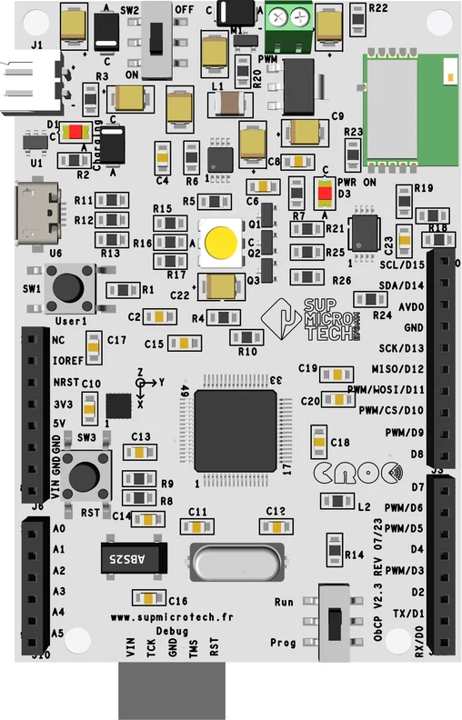

Carte ObCP
Objet connecté personnel
Vue d’implantationMicrocontrôleurSTM32L476RG
InterfaceBluetooth LE
Pilotage des sorties et acquisition des capteurs par Bluetooth LE.

Vue d’implantationOBCP_template_2026 ou le template 2024. Libérez la liaison si l’application Android est connectée.localhost, puis activez le Bluetooth sur l’appareil.OBCP-CROC. Déplacez le curseur rouge à 50 % puis démarrez l’acquisition et inclinez la carte.Le sélecteur du navigateur gère les autorisations. L’adresse MAC physique reste masquée.
Sur Windows et macOS, utilisez Chrome ou Edge. Sur Android, utilisez Chrome. Sous Linux, la disponibilité dépend de Chromium, de sa configuration et de l’adaptateur.
Sur iPhone ou iPad, ouvrez l’adresse HTTPS dans Bluefy pour essayer le BLE. Safari et Firefox permettent d’explorer le simulateur.
Pour installer la version hébergée, utilisez le menu d’installation du navigateur lorsqu’il est proposé. Les fichiers sont disponibles hors ligne après leur première mise en cache.
Les curseurs transmettent leur consigne au relâchement. La LED RVB suit une loi cubique, la sortie PWM du bornier J13 une loi linéaire. La remise à zéro coupe les quatre sorties et arrête le timer.
Le template transmet les accélérations en g et la température du capteur en °C chaque seconde. Faites glisser une courbe pour parcourir l’historique. Utilisez deux doigts, la molette ou les boutons pour zoomer.